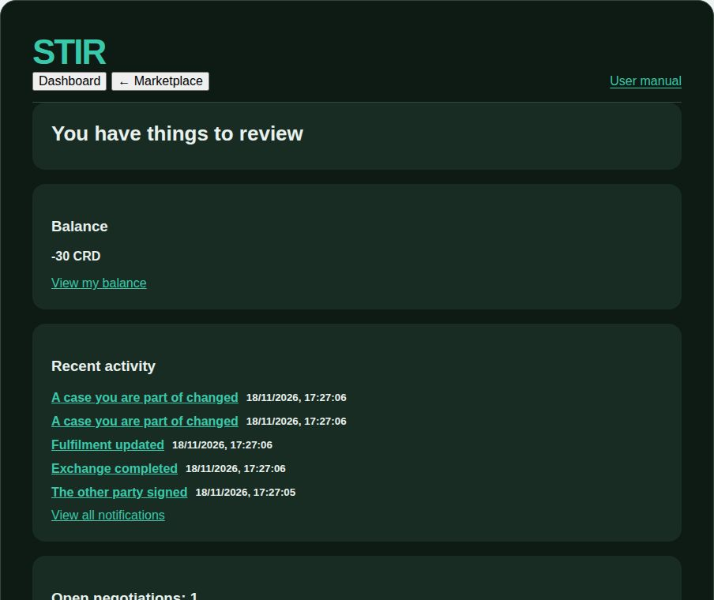
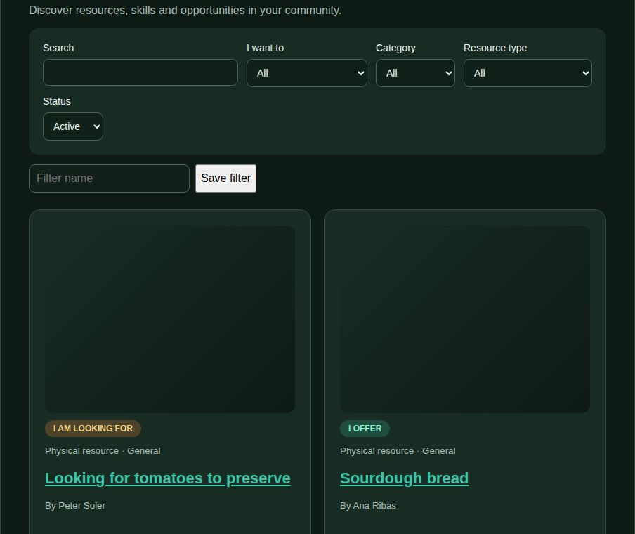
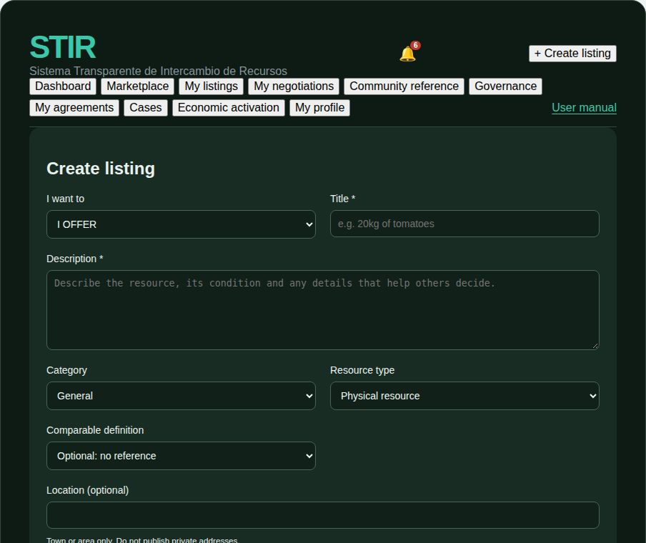
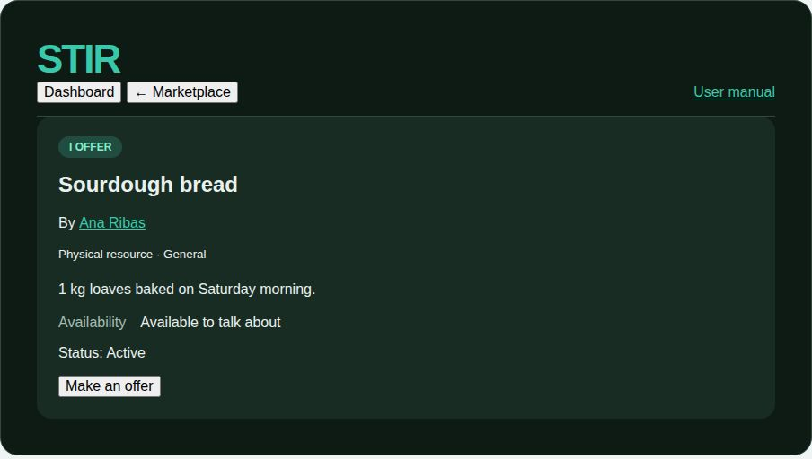
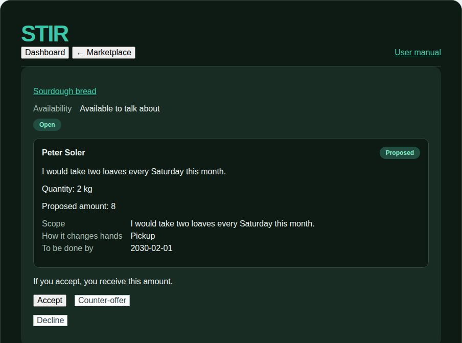
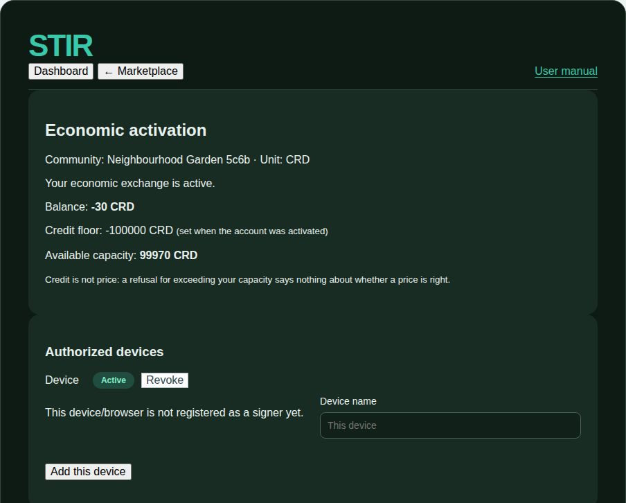
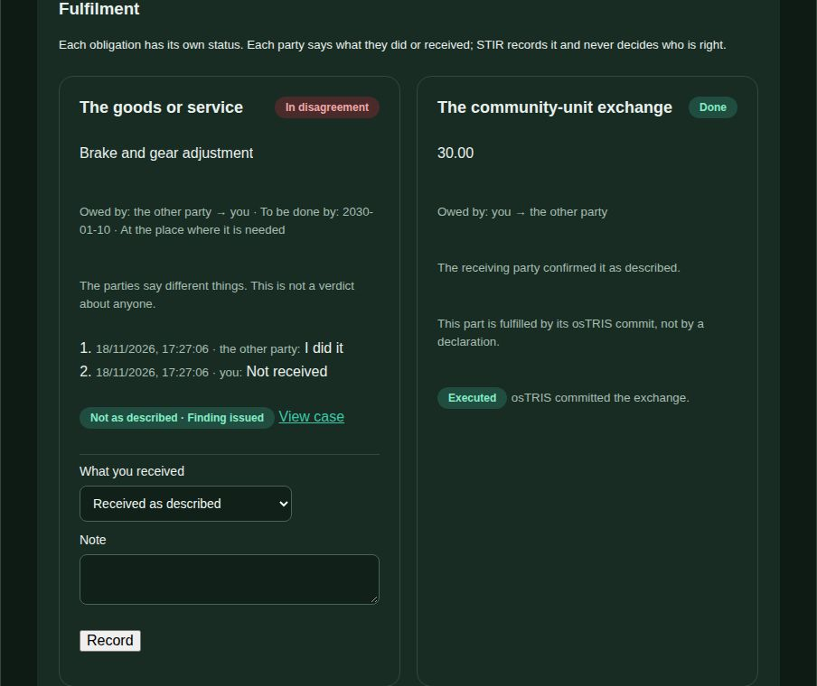
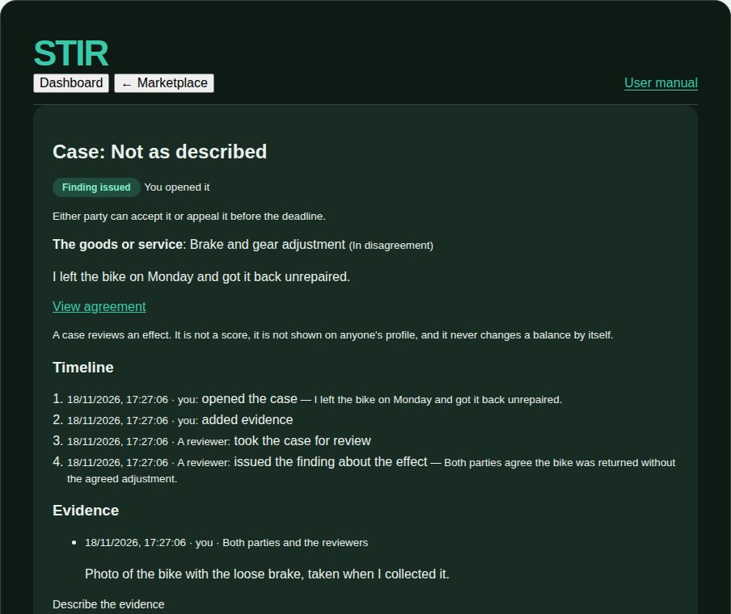
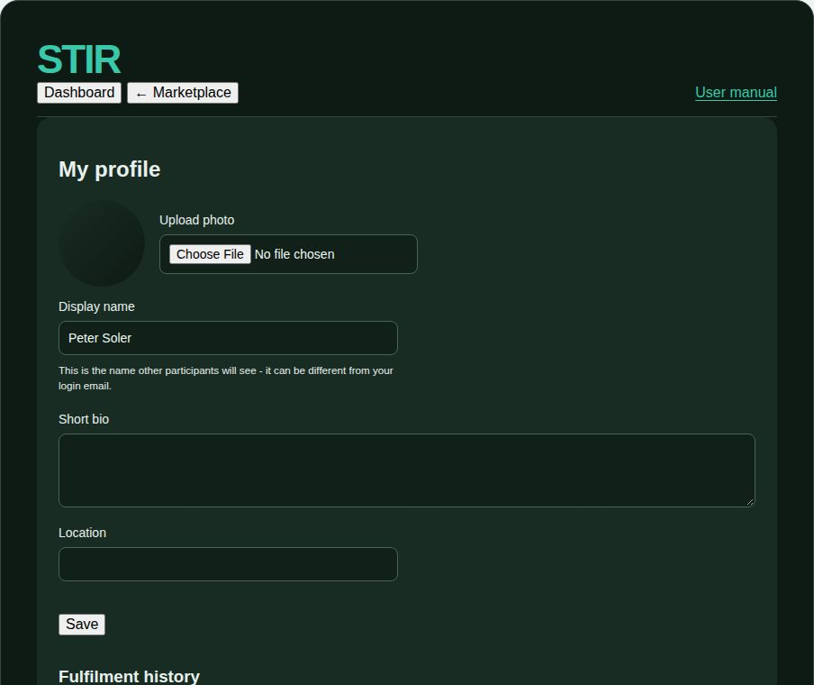

1. How to use this guide
STIR is where a community exchanges resources: goods, services, knowledge, collaboration or work. You can publish what you offer or what you are looking for, negotiate with other people, close an agreement and, if it carries an amount, complete it in your community's community unit.
This guide follows the order in which STIR is normally used. If this is your first time, start with First steps. If you are looking for a specific screen, the Screen index explains each one in a line. Button and field names appear like this: Create listing.

- What was agreed is never rewritten. An agreement stays frozen exactly as it was accepted. If something changes, an amendment is added that says what it replaces.
- Nobody decides for you, and nothing happens by itself. Every step is taken by a named person: you, the other party or a community reviewer.
- There are no scores. STIR rates nobody. What it shows are facts the other party confirmed, and only if the person they are about chooses to share them.
Who does what
| Role | What they do | Where this guide explains it |
|---|---|---|
| Participant | Publishes, negotiates, agrees, exchanges and declares what they did or received. | Chapters 2 to 13 and 15 |
| Case reviewer | A person named by the community who reviews cases they are not part of. | Chapter 14 |
| Reference publisher | Proposes and publishes value orientations for the community. | Chapter 16 |
| Moderation | Reviews reports and can hide listings. | Chapter 18 |
| Community administration | Registers people, assigns permissions, sets up the economic community and names the reviewers. | Chapter 19 |
What you see depends on the permissions your community gave you. If a tab or a button described here is missing, ask your community's administration to check it.
2. First steps
Signing in
- Open your community's address in your browser and enter your email and password.
- If your community requires a second step, enter the 6-digit code from your authenticator app. The first time, you will be asked to set it up and given recovery codes: keep them somewhere safe, outside the browser. Each one works once if you lose your phone.
- If you belong to several communities (workspaces), choose yours in the Current workspace selector at the top.
- Open the STIR card. You will land on the Dashboard.
You can change the language in the language selector at the top. STIR is translated into twelve languages.
Your first three steps inside STIR
- Complete your profile in My profile: the Display name is what other people will see, and it can differ from your email. See Your profile.
- Activate exchanges in Economic activation if you will exchange amounts in the community unit. Your profile must be complete first. See The exchange in the community unit.
- Explore the marketplace or create your first listing. See Searching and Publishing.
The tab bar
From the marketplace you have these tabs: Dashboard, Marketplace, My listings, My negotiations, Community reference, Governance, My agreements, Cases, Economic activation, My profile and, if you moderate, Moderation queue. At the end, User manual opens this guide. On every other page, ← Marketplace takes you back to the start.
3. Concepts worth knowing
| Term | What it means |
|---|---|
| Listing | What someone offers (I OFFER) or is looking for (I AM LOOKING FOR). It can be Active or Closed. |
| Offer and counter-offer | What one person proposes to another about a listing. Each answer is a new offer; the previous one becomes Superseded and is never edited. |
| Negotiation | The conversation between whoever published and whoever answered, with all its offers. |
| Agreement | What exists once one party accepts the other's current offer. It is frozen in a contract snapshot with its digest, a code that proves nobody has changed it. |
| Community unit | Your community's unit of account, a mutual credit. It is not legal tender and has no fixed exchange rate with any currency. |
| osTRIS | The community's economic record. It is the only thing that moves balances, and only when both parties sign. |
| Balance and credit floor | Your balance in the community unit and how low it may go. The difference is your available capacity. |
| Obligation | Each thing an agreement commits to: the goods or service, each party's tasks, and the exchange in the community unit. Each has its own status. |
| Declaration | What a party says they did or received. It is never a verdict on the other. |
| Amendment | A change both parties accept that says what it replaces. It never rewrites the agreement. |
| Case | A request for the community to review an obligation that was not fulfilled. It reviews the effect, not the person. |
| Community reference | A value orientation the community publishes. It orients; it never binds. |
4. Dashboard and notifications
The Dashboard tells you whether you have things to review or you are all caught up. It groups:
- Waiting for your signature: exchanges that only need your signature.
- Open negotiations.
- Agreements awaiting economic execution.
- My active listings.
- Reminders to complete your profile or activate economic exchange, if you have not yet.
- Recent activity, with a link to View all notifications.
Notifications
The bell at the top shows how many unread notifications you have. Clicking one takes you straight to the negotiation or agreement it is about. You are notified when:
- you receive an offer or a counter-offer, or yours is accepted or declined;
- your signature is needed, or the other party has signed, and when the exchange completes or is rejected;
- the other party declares something about an obligation, or proposes, accepts or rejects an amendment;
- someone asks for a review of an obligation of yours, or a case you are part of changes.
5. Searching the marketplace
The Marketplace tab shows your community's listings. Each card shows whether it is I OFFER or I AM LOOKING FOR, the resource type, the category, who publishes it and, if given, its approximate location.

- Type what you are interested in into Search.
- Filter by I want to (offer or look for), Category, Resource type and Status (active or closed).
- If you often use the same search, give it a name in Filter name and press Save filter. It appears as a button to apply it again.
- Clear filters shows everything again. Use Previous and Next to change page.
My listings shows only yours, with the buttons to edit or close them.
6. Publishing what you offer or need
- Press + Create listing.
- In I want to, choose I OFFER or I AM LOOKING FOR.
- Write a clear Title (for example «20 kg of tomatoes») and a Description that helps people decide: condition, quantity, terms.
- Choose Category and Resource type: physical resource, service, knowledge or workshop, collaboration, volunteering, work or other.
- If you wish, give a Location. Town or area only: never publish a private address.
- Press Save and add photos. Once saved, add photos and mark the Main photo.

What exactly is offered or needed
These details are optional and help compare like with like. None of them sets a price.
- Condition: new, like new, good, fair or for parts.
- How it changes hands: pickup, delivery, either, where it is needed, or remotely.
- What is included: accessories, materials or limits of what you offer.
- Availability: available to talk, in conversation with someone, or already agreed. Changing it does not close the listing.
- Available until (for an offer) or Needed by (for a request).
- For a request, for each aspect (timing, place, quantity, condition, amount), say whether it Can change or Cannot change. A flexible time does not make the place flexible.
- Details for whoever negotiates with you: only people who start a conversation about this listing see them. Share only what is needed.
Indicative price and community reference
You can give an Indicative amount: it is your starting price, not what the market accepts. If you tick Use this listing's indicative price as community reference evidence, it may count, without your name, in the community's statistics. You can withdraw that permission later (see Your consents).
If the community has published a reference for this kind of resource, you can link it. The orientation is shown next to the listing; it does not bind you.
Editing and closing
In My listings, Edit changes the listing. Earlier versions are kept: an offer made on the earlier version does not change. Close listing removes it from the marketplace and it cannot be reopened; to offer the same again, create a new one.
7. Reading a listing
When you open a listing you see its description, photos, details and who publishes it. Click the name to see their public profile.

- If the listing is linked to a community reference, you see the orientation with its origin and validity. Why am I seeing this reference? explains it. It is an orientation, never a price: you are free to agree another amount.
- If the reference does not yet have enough data, STIR says so instead of showing an unreliable figure.
- Make an offer opens the form to negotiate (see Negotiating). On your own listing you will see «This is your own listing».
- Report sends the listing to moderation if you think it breaks the community's rules.
8. Negotiating
Making an offer
- On the listing, press Make an offer.
- Write a Message. If it applies, give a Quantity and a Unit (for example «5» and «kg»).
- If there is an amount in the community unit, enter it in Proposed amount. Without an amount, the agreement has no economic exchange.
- In What this proposal covers, describe what is agreed: the Scope (what is included and what is not), What you will do, What the other person will do and To be done by.
- If you leave questions for later, write them in Still open. Whoever accepts does so knowing they remain open.
- If you want your offer to expire, set Can be accepted until.
- Press Send offer.
Answering
In My negotiations you see each conversation with its status: Open, Accepted or Declined. Inside, each offer shows its own status: Proposed, Superseded, Accepted or Declined. When it is your turn you can:

- Counter-offer: propose other terms with the same form and press Send counter-offer. The previous offer is superseded, never edited.
- Accept: STIR reminds you whether this means you pay or receive the amount, and who does. If the offer leaves questions open, you have to tick that you accept with them open.
- Decline: closes the negotiation without an agreement.
While you wait, you will see «Waiting for the other party to respond».
Sharing the agreement as a statistic
When accepting, you can allow the agreement to count in the community's aggregate statistics, if the other party allows it too. Messages and identities are never published, and you can withdraw it later.
9. Your agreements
My agreements shows all your agreements with their economic phase: No economic exchange, Awaiting economic execution, Awaiting signatures or Committed. When you open one you see:
- What you agreed: the agreed amount and quantity and the accepted terms, including the questions left open.
- Economic execution: the exchange in the community unit, if there is one (see chapter 10).
- Fulfilment: the obligation board (see chapter 11).
- Reference when agreed: the community orientation in force when you agreed. Context only; not a contract term.
- Contract snapshot: the agreement's Digest (SHA-256) and its exact bytes. It lets anyone check that the agreement has not changed since it was accepted.
10. The exchange in the community unit
Activating your exchanges
- Complete your public profile first.
- Go to Economic activation and press Activate exchanges.
- You will see «Your economic exchange is active», with your Balance, your Credit floor and your Available capacity.

The credit floor says how low your balance may go; today it is set when the account is activated. Available capacity is your balance minus that floor. Credit is not price: if an exchange is refused because it would exceed your floor, that says nothing about whether the price was right.
If you see «This marketplace is not yet linked to an economic community», your community's administration has to set it up first (see chapter 19).
Authorized devices
Your signing key is in the browser where you activated exchanges. Authorized devices lists the devices you can sign with.
- To sign from another computer or browser, sign in from it and press Add this device. You can give it a name.
- To stop using one, press Revoke. You cannot revoke your only active device.
- If your community requires it, adding or revoking a device asks for the 6-digit code from your authenticator app. That code approves only that change.
Completing an agreement's exchange
- In the agreement, press Start economic exchange. STIR prepares the exchange exactly as agreed: who pays, to whom and how much.
- Each party presses Sign exchange from an authorized device. You will see «Waiting for the other party's signature» until they sign.
- With both signatures, either party presses Commit exchange. osTRIS records it and moves the balances.
Once committed, you see the Community sequence, the Protocol digest and the date. STIR never signs on your behalf.
What each result means
| Result | What happened | What to do |
|---|---|---|
| Executed | osTRIS confirmed the exchange. | Nothing: it is done. |
| Refused: credit limit | The paying account would fall below its floor. It is a limit that worked as designed, not a judgement on the price. | Retry when the balance allows it. The agreement still stands. |
| Signatures missing | One of the two parties has not signed yet. | Sign and commit again. |
| Badly described | What was asked to execute is not correctly described. Nothing moved. | Tell the administration. |
| System fault | A technical fault, not a fault of the people. Nothing moved. | Retry later; if it happens again, tell the administration. |
| Unknown result | It is not known whether it executed (for example, the connection dropped). | Reload the agreement before assuming anything. |
11. Fulfilling what was agreed
In each agreement, the Fulfilment section shows a board with one card per obligation:
- The goods or service: owed by whoever provides it.
- The publisher's tasks and the responder's tasks: what each party committed to do.
- The community-unit exchange: fulfilled when osTRIS confirms it, never by a declaration.

Each card shows who owes it to whom, by when, how it changes hands and its status. Obligations never wait for each other.
Declaring what you did or received
The cards that concern you have a form. Each party declares only its own side:
| If the obligation is yours (you owe it) | If it is owed to you |
|---|---|
| I did it I did part of it I did not do it |
Received as described Received part of it Received, but not as described Not received |
If you declare part of it, the Note is required: say what was done and what is missing. Press Record. The other party is notified. If you make a mistake, record a new declaration: the earlier one stays in the history.
Obligation statuses
| Status | What it means |
|---|---|
| Pending | Nobody has declared anything yet. |
| Declared | Whoever owes it has declared; the other party has not answered yet. |
| Partly done | Whoever receives it confirms a part; the notes say what is missing. |
| Done | Whoever receives it confirmed it is as described. |
| In disagreement | The parties say different things. It is not a judgement on anyone. If talking does not settle it, a review can be requested (see Cases). |
| Not fulfilled | Both parties agree it was not done. |
| Superseded | An accepted amendment replaced it. |
Above the board you may also see an open case about an obligation, a correction of the exchange, or a notice that execution is paused while a case is reviewed.
12. Changing an agreement: amendments
An accepted agreement is never rewritten. If both parties want to change something (a date, a task, the scope), one proposes an amendment and the other accepts it.
- In the agreement, press Propose an amendment.
- Under It replaces, tick the obligations that change.
- With Add an obligation, describe how they will be: what it is, the description, by when and how it changes hands.
- Explain Why it changes and press Propose.
The other party can Accept amendment or Reject it; whoever proposed it can Withdraw it. Once accepted, the replaced obligations become Superseded and the new ones start as Pending; everything else is kept. Each accepted amendment has its own digest, chained to the agreement's.
13. When something was not fulfilled: cases
If the person who owed you something did not do it, or not as described, and talking does not settle it, you can ask the community to review it. A case reviews what happened to the obligation, not the person. It is not a score, it is shown on nobody's profile and it never changes a balance by itself.
Asking for a review
- On the agreement's board, on the card that was owed to you, press Ask for a review. It only appears if the obligation is owed to you and is not yet done.
- Choose What happened: not delivered, not as described, or only partly delivered.
- Write Your account of what happened: what was agreed and what did not happen.
- Press Open the case. The other party is notified and can answer with their own evidence.
A review can only be requested once the community has named its reviewers. The Cases tab links to Who reviews cases here.
Adding evidence
On the case page, describe the evidence and, if you have one, a reference (tracking number, receipt…). Choose who can read it:
- Both parties and the reviewers: the usual choice.
- Only the reviewers: for private details such as an address or a document. The other party will see that you added evidence, but not what it says.
Evidence is never edited or deleted.

How a case moves
| Status | What it means |
|---|---|
| Open, waiting for a reviewer | A reviewer who is not part of the agreement will take it. |
| Under review | Both parties can still add evidence. |
| Finding issued | Either party can accept or appeal it before the deadline. |
| Appealed | Another reviewer, not the author of the finding, will decide the appeal. |
| Resolved | The finding about the effect is final. |
| Withdrawn | Whoever opened the case withdrew it, for example because you reached an arrangement. |
The Timeline tells each step: who took it and when. Each party sees everything, except the content of evidence reserved for the reviewers.
The decisions, one by one
| Decision | What it answers |
|---|---|
| Finding about the effect | What happened to the obligation (not fulfilled, partly fulfilled, or could not be established) and how it is repaired. It says nothing about anyone's intentions. |
| Attribution of conduct | A separate, optional question, only once the finding is final: did someone's conduct cause it? «A third party, in good faith» (for example the courier) is a valid answer. |
| Sanction | Only a warning, only after a final attribution of breach, and always decided explicitly by a reviewer. It changes no balance, credit, history or profile. |
Each decision has its own appeal window. While it is open, you can Accept this decision or appeal it, explaining Why you appeal it. Nothing becomes final just because time passes: both parties must accept it, a reviewer must confirm it once the window closed with no appeal, or another reviewer must uphold the appeal.
The repair
- If the final finding orders reversing the exchange in the community unit, the reviewers sign it with their own keys and osTRIS records it. The original exchange stays in the record and the reversal is linked to it. The parties never sign the correction of their own agreement.
- The finding can describe another repair, such as redoing the work by a date.
While a case is reviewed, a reviewer can pause the agreement's execution and amendments for a limited time. You will see a notice with the end date. The pause never touches a person, an account or a balance.
Whoever opened the case can Withdraw the case while the finding is not final, for example if you reached an arrangement.
14. For case reviewers
If the community named you a reviewer, under Cases you will see Cases to review. You never review a case you are part of: for that case you are only a party.
- Take the case. On an open case, press Take this case. You read all the evidence, including the restricted kind.
- Pause, if needed. With Pause execution you say until when (30 days at most) and why. Lift the pause removes it earlier.
- Issue the finding. Only whoever took the case. Choose what happened to the obligation and whether the community-unit exchange is reversed in full (only if the effect was established and the exchange is committed). Describe any other repair and explain your reasons. Press Issue the finding.
- Make it final. Confirm as final only works if both parties accepted it or the window closed with no appeal.
- Decide an appeal. If you are not the author of the appealed decision, choose Decision confirmed or Decision overturned and explain why. An overturned finding goes back to review with you, never with its author.
- Conduct and sanction, only if warranted. With the finding final you can issue an attribution of conduct. On a final attribution of breach, and only if you decide it explicitly, a warning.
- Repair the economic effect. If the final finding orders the reversal, press Prepare the reversal in osTRIS. Each reviewer presses See exactly what you would sign, checks the amounts and presses Sign with my key. With the required signatures, osTRIS records it. If osTRIS does not answer, Ask osTRIS again retries.
15. Your profile, history and consents
Public profile
In My profile you edit your Display name, your Short bio, your Location and your photo (Upload photo). It is what other people see when they click your name.

Fulfilment history
It is a record of facts, not a score: how many deliveries or tasks you completed to the other party's confirmed satisfaction. No amounts, no names, no percentages and nothing about what did not go well.
- It is off by default. For others to see it, tick Show my fulfilment history to other participants.
- You always see your own.
- «No history yet» means there are no confirmed facts yet. It is never a low mark.
Your consents
Under My consent to reference evidence you see each agreement or indicative price you allowed to count in the community's statistics. With Withdraw, it stops being used for future references. What was already published, and your agreements, do not change.
16. Community references
A community reference is a value orientation the community decides to publish for a kind of resource. It can be a value, a band, an initial convention (when there are no agreements to learn from yet) or a description without a figure. It always shows who decided it, by what method and until when it is valid.
Next to the reference, STIR can show what was observed in earlier agreements: the median and the middle half, how many agreements, distinct accounts and relationships, and over what period. If they are few, or very concentrated, STIR says so and hides the exact figures. Many distinct accounts do not prove they are independent people.
For reference publishers
- Create comparable definition: what is compared, base quantity and unit.
- Propose reference and, after review, Publish new version. The history of versions is kept.
- Reference policy: window, minimums and accepted sources, always within the constitutional floors.
- Evidence breakdown: each observation with its reason for inclusion or exclusion.
- Market integrity: a signal is not a finding. It goes to review, and only a final decision by someone else changes future evidence; never the agreement itself.
- Retention: how long evidence is kept and which observations may be anonymized. It never happens automatically.
17. Community governance
The Governance tab brings together two different levels:
- Ordinary governance: if the community turns it on, publishing a reference or changing its policy requires an approved vote. There is a community-owned Electorate and a Voting policy (quorum, approval, window and abstentions). Members of the electorate can Approve, Reject or Abstain. When the vote closes, an approved proposal is carried out with Execute the approved decision. To turn it on, first add at least one person to the Electorate; until then the switch cannot be ticked.
- The Seven Keys: they protect the rules of the game (the limits ordinary governance cannot cross). They require the signatures of all seven constitutional seats, each from its holder's own device. The Guardian can suspend a credential in an emergency, but never governs or votes.
Being a platform administrator, the Guardian or a seat holder gives no ordinary vote by itself: only being in the electorate does.
18. Reporting and moderation
If a listing or a profile breaks your community's rules, press Report, give the Reason and press Submit report.
Moderators see reports in the Moderation queue, with a link to what was reported, and can Hide listing or Dismiss the report. A hidden listing tells its author it was hidden by moderation.
19. Administering the community
People and permissions
The administration registers people from the platform's Users screen. What each person can do is decided by their roles, and each role is a list of permissions.
STIR's roles do not need to be set up by hand. Every workspace already has these roles, which the platform itself creates and keeps up to date; on the Roles screen their origin is Module template:
| Role | What it is for | Permissions |
|---|---|---|
| STIR participant | Everything in this manual up to chapter 15: publishing, negotiating, agreeing, exchanging, fulfilling and asking for reviews. Every new person joins with this role. | stir.listings.read, stir.listings.create, stir.listings.update, stir.participants.read, stir.participants.update, stir.negotiations.read, stir.negotiations.create, stir.negotiations.update, stir.agreements.read, stir.agreements.fulfil, stir.economic.read, stir.economic.manage, stir.notifications.read, stir.content.report, stir.references.read, stir.consent.manage. To sign exchanges: OSTRIS_DISCOVERY_READ, OSTRIS_PARTICIPANT_ACTIVATE, OSTRIS_CREDENTIAL_MANAGE, OSTRIS_TRANSACTION_CREATE, OSTRIS_TRANSACTION_READ, OSTRIS_TRANSACTION_AUTHORIZE and OSTRIS_TRANSACTION_COMMIT. |
| STIR case reviewer | Signing case corrections. The community also has to name them a reviewer (see below). | OSTRIS_RESOLUTION_RECORD |
| STIR moderation | Reviewing reports and hiding listings. | stir.moderation.manage |
| STIR reference publishing | Proposing and publishing references, and managing retention. | stir.references.propose, stir.references.publish, stir.retention.manage |
| STIR electorate | Voting in ordinary governance. The community also has to include them in its electorate. | stir.governance.vote |
Roles add up: a reviewer has STIR participant and also STIR case reviewer. Two permissions have no template because they are administrative: stir.governance.manage (managing the electorate and voting policy) and OSTRIS_COMMUNITY_MANAGE (setting up the economic community, while also being the workspace's owner or administrator).
The role names are set by your platform's configuration; on this installation they appear in Spanish (for example «Participante STIR»).
- When you register someone, Assigned roles already has STIR participant ticked. Leave it, and the person can use STIR straight away. Untick it only if they should not take part.
- People who were already there: on Roles, press Give module roles to current members. Whoever lacks STIR participant gets it; nobody loses a role they had.
- When STIR is updated and needs a new permission, the platform adds it to these roles by itself. It never removes a permission the administration added.
- You can rename these roles or disable them (a disabled role is given to nobody, new people included). They cannot be deleted, since the platform would create them again.
Setting up the economic community
Once per community: in Economic activation, fill in Community name, Unit code and Decimal places, and press Set up economic community.
Naming the case reviewers
- Go to Cases → Who reviews cases here → Change the reviewers.
- Enter the reviewers' user ids, one per line. At least two are needed, and each must have economic exchange activated.
- Set the Signatures needed for a correction in the community unit and the Appeal window (hours).
- Press Save reviewers.
Only the community's authority can do this: its owner or administrator or, if ordinary governance is on, a member of the electorate. Being a platform administrator is not enough. The list of reviewers is public to the community.
20. Troubleshooting
| Message | What it means and what to do |
|---|---|
| Sign in with a real account and select a tenant to use STIR. | Sign in with your account and choose your community under Current workspace. |
| Your session has expired. | Sign in again. |
| You do not have permission for this operation. | Your role does not include that feature. Ask the administration to check that you have STIR participant or the role it needs (see chapter 19). |
| This has changed or no longer applies. Reload and try again. | Someone else acted at the same time (for example, answered the negotiation). Reload the page and check the new state. |
| Set up your marketplace profile before activating exchanges. | Complete My profile first. |
| This exchange currently exceeds your credit floor. | Your balance does not allow it now. It is not a judgement on the price; the agreement still stands. |
| This device/browser is not registered as a signer yet. | Add it under Authorized devices, or sign from the browser where you activated exchanges. |
| A case reviewer paused this agreement's execution and amendments… | A case is under review. Wait for the date shown or for it to be resolved. |
| This community has not named its case reviewers yet… | The administration has to name them before cases can be opened. |
| Too many attempts. | Wait a few minutes and try again. |
| The service is not available. | Try again later. If it persists, tell the administration. |
21. Screen index
| Screen | Address | What it is for |
|---|---|---|
| Dashboard | /stir/home | What is pending and recent activity. |
| Marketplace | /stir | Search and filter listings. |
| My listings | /stir/mine | Your listings, to edit or close them. |
| Create listing | /stir/new | Publish what you offer or need. |
| Listing | /stir/listing/… | Read a listing and make an offer. |
| My negotiations | /stir/negotiations | Your open and closed conversations. |
| Negotiation | /stir/negotiations/… | Offers, counter-offers, accepting or declining. |
| My agreements | /stir/agreements | All your agreements with their economic phase. |
| Agreement | /stir/agreements/… | What was agreed, the exchange, fulfilment, amendments and cases. |
| Cases | /stir/cases | Cases you are part of and, if you review, cases to review. |
| Case | /stir/cases/… | A case's timeline, evidence, decisions, appeals and corrections. |
| Case reviewers | /stir/case-review | Who reviews, how many signatures are needed and the appeal window. |
| Economic activation | /stir/economic | Activate exchanges, balance, floor, capacity and devices. |
| My profile | /stir/profile | Public profile, fulfilment history and consents. |
| Public profile | /stir/participants/… | What another person shares. |
| Notifications | /stir/notifications | All your notifications. |
| Community reference | /stir/references | Published references and, for publishers, proposals, policy, evidence and integrity. |
| Governance | /stir/governance | Ordinary governance and the Seven Keys. |
| Governance signing tool | /stir/governance/sign | Sign a governance task you received, on your own device. |
| Moderation queue | /stir/moderation | Review reports. |
| Privacy | /stir/privacy | The community's privacy policy. |
| Terms | /stir/terms | The community's terms of use. |